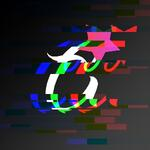

G / 01THIS IS MY CORNER

一张熟悉的脸，一点点新变化。MOTION DESIGN✳日常记录✳INTERNET ODDITIES✳慢慢更新✳✳✳✳✳
01WHO'S HERE
一个人在网上
留的小坐标。
我是 Gertvy，一名 Motion Designer。欢迎来到我的个人角落。
这里不急着把一切都整理成答案。先放一些念头、一些喜欢的东西，还有偶尔想分享的画面。
去别处找我02FIELD NOTE
一段关于远处雪山的小记
有些人，
出生就在罗马。
“但其实每个人都知道你很狼狈。”
展开这段旧念头
很久以后我忽然明白了抽象视频为什么那么火，有那么多的人玩速通。
“到达世界最高城——理塘！太美丽了理塘！哎呀，这不丁真吗？再看一下远处的雪山吧，家人们……”
你历经千辛万苦，拖着沉重的行囊，克服过雨雪风霜，或许还有令人难受的高反，终于到达了世界最高城。你拿出手机想要记录下此刻的美好，想要与大伙分享此刻的喜悦，也顾不上收拾收拾自己那憔悴的面容，你提高了说话的音量想要让自己看起来更有精神一点。
但其实每个人都知道你很狼狈。你看见广告牌上的那个人好像有点眼熟，你叫得出他的名字。“他在这里应该已经很久了吧，还是说他一直都在？”
你不知道自己心里究竟是个什么滋味，只是看向远处雪山。或许，正如他们所言：“有些人，出生就在罗马。”
03ELSEWHERE
目前先把常去的地方
放在这里。